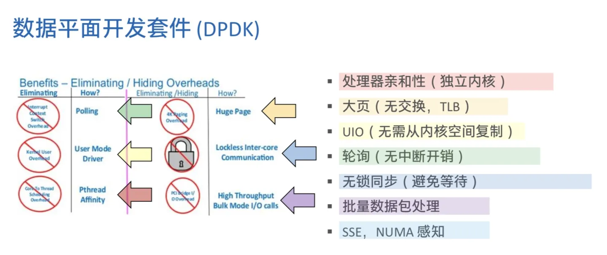

DPDK
DPDK是一个非常大的话题，Intel联合众多厂商已经开发十几年了，很难用简短的文字说清楚它，本文旨在介绍dpdk的基本概念，感兴趣的同学可以浏览 https://github.com/0voice/dpdk_engineer_manual 进一步的研究。
图：Logo
dpdk为Intel处理器架构下用户空间高效的数据包处理提供了库函数和驱动的支持，它不同于Linux系统以通用性设计为目的，而是专注于网络应用中数据包的高性能处理
DPDKk的基本原理
早在2008年，Intel的网络通信部门就针对Intel处理器和网卡开发出来DPDK。
传统的网卡驱动运行在操作系统内核态，而绝大多数软件代码都运行在用户态。内核态的网卡驱动采用中断模式通知 CPU 处理数据包，随着网络流量的增长，响应中断处理很快就会淹没CPU。而在内核态与用户态之间的切换和数据拷贝等额外开销也都会浪费CPU的处理能力。
图：用户空间和内核空间的关系

DPDK 通过用户空间轮询模式驱动 (Poll Mode Driver，PMD) 一举解决上述问题：网卡可以直接将数据包传输到位于用户空间的缓冲区，CPU 空闲时通过轮询的方式读取数据包并在原地址上处理，不再有中断、拷贝、上下文切换等处理消耗。
而且在用户空间开发、调试驱动，也比在内核中更为安全、方便。
图：DPDK 的组成

从系统的视角来看，DPDK 就是运行在用户空间上利用自身提供的数据平面库来收发数据包，绕过了 Linux 内核协议栈对数据包处理过程。
Linux 内核将 DPDK 应用程序看作是一个普通的用户态进程，包括它的编译、连接和加载方式和普通程序没有什么两样。
DPDK的具体技术性突破
DPDK证明了IA多核处理器能够支撑高性能数据包处理，其采用的每种性能优化技术都是为了节省数据包处理时间。 DPDK做了内存池技术、大页内存管理、无锁环形队列、CPU亲和性、无锁环形队列等一些列的技术突破。
在最终的性能上，dpdk可以将数据包处理性能最多提高十倍。在单个英特尔® 至强® 处理器上获得超过80Mbps的吞吐量，在双处理器配置中则可将该其提高一倍。
图：DPDK的技术性革新
DPDK 生态发展
这项基于通信领域软硬件机构变化而诞生的技术，后续发展势能远超想象。
Intel 最初开发这项技术，并在随后将其开源，目前已经是 Linux 基金会旗下的开源项目之一。
到 2019 年末，DPDK 的贡献者来自 25 个以上组织的 160 多位专家。越来越多的开源项目使用到 DPDK。
图：DPDK的生态

尽管 DPDK 最初是应用在电信领域，但其实还可用于企业数据中心、以及云厂商中部署的解决方案。作为 Open vSwitch (OvS) 的一部分，DPDK 被广泛部署全球云、企业和电信数据中心。
DPDK 的其他用例还包括虚拟交换、数据分析、AI 推理、视频转码等等。
图：DPDK的生态应用

开源进程给 DPDK 的发展注入强大动力，主流网卡厂商和 Linux 发行版均支持 DPDK 相关技术；开放的厂商心态也让 DPDK 跨架构快速增长，适用包括 RISC-V 在内等更多不同的硬件平台。
随着云计算的进一步推进，越来越多的数据会在云上加工：物联网设备的数据收集量与日俱增、业务大数据和 AI 分析的日益增长、5G下媒体更高分辨率的需求。
这些都对网络基础设施和大数据处理都提出了更高的要求，而如何提高数据包处理效率也变得愈发重要。
DPDK在推动高性能通用CPU的使用方面都起了重大作用。
近几年的发展中，也显现出很强的软硬件融合的趋势，在云基础设施对数据网络性能的强烈需求下，DPDK也得到了进一步的发展。